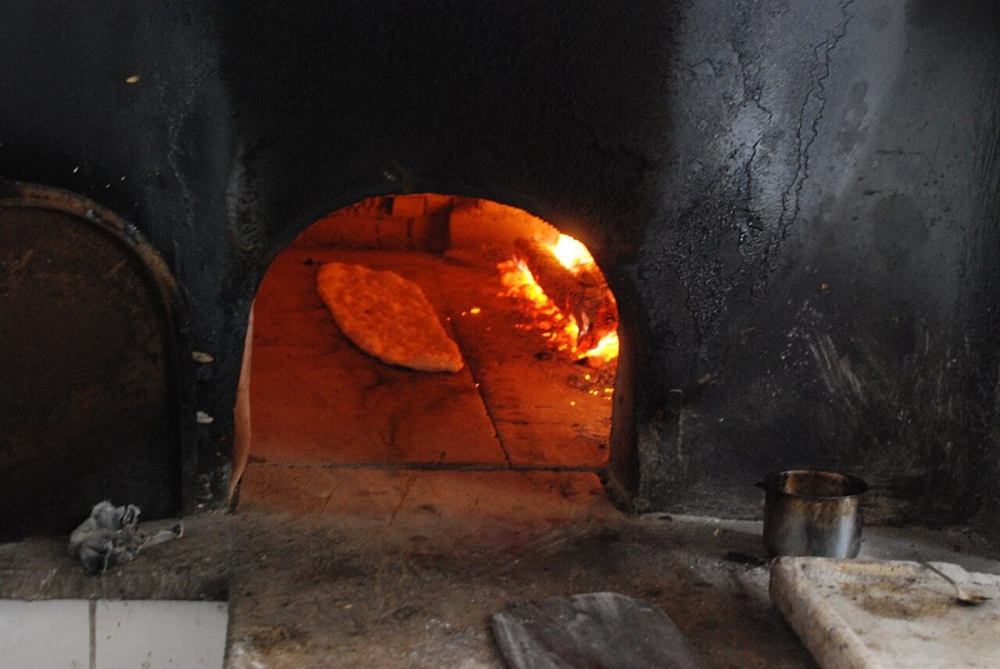
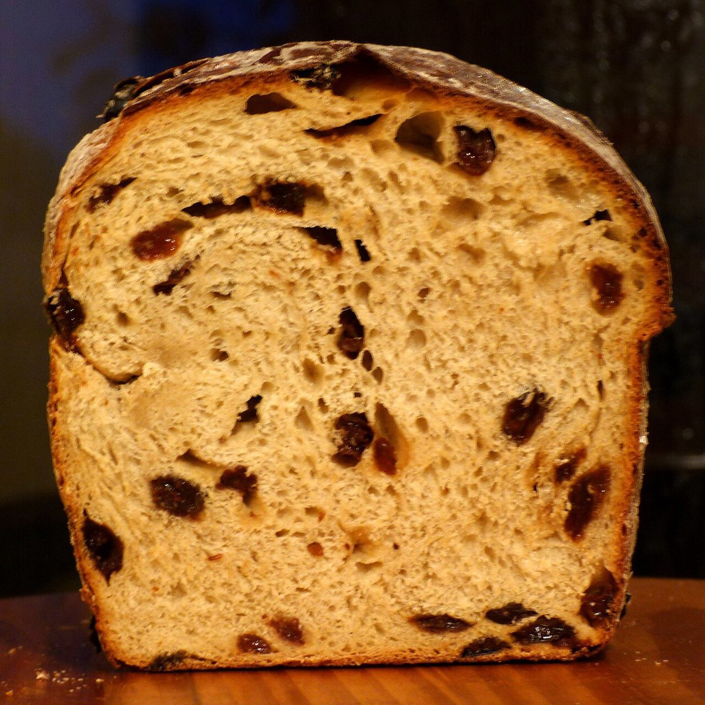

パンの実
制作側の連想
実るほど、頭を垂れる枝
屋号の「実」から、制作側は「実るほど頭(こうべ)を垂れる」という言い回しを連想し、実の重みでたわむ一本の枝をデザインの軸にしました。ページ上部のメニューは、枝から実が下がるイメージです。お店の理念・由来とは無関係な、制作側の連想です。
たわむ枝の五段階(イメージ)
ひとつずつ、すこしずつ下へ。
並んだ写真は階段状に下がっていきます。写真は徳島市の風景やお店の商品ではなく、国外・撮影地不明のフリー素材です。
- ひとつめ

撮影地不明のイメージ - ふたつめ

国外のイメージ(米国) - みっつめ

撮影地不明のイメージ - よっつめ

国外のイメージ(フランス) - いつつめ

撮影地不明のイメージ
ご案内
お店のこと(確認できたものだけ)
| 所在地 | 〒770-0023 徳島県徳島市佐古三番町４−１３ |
|---|---|
| 電話 | 088-625-8650 |
| 営業時間 | 準備中 |
| 定休日 | 準備中 |
| ご予約 | 準備中 |
| 駐車場 | 準備中 |
| SNS | Instagram @pan.no.mi |